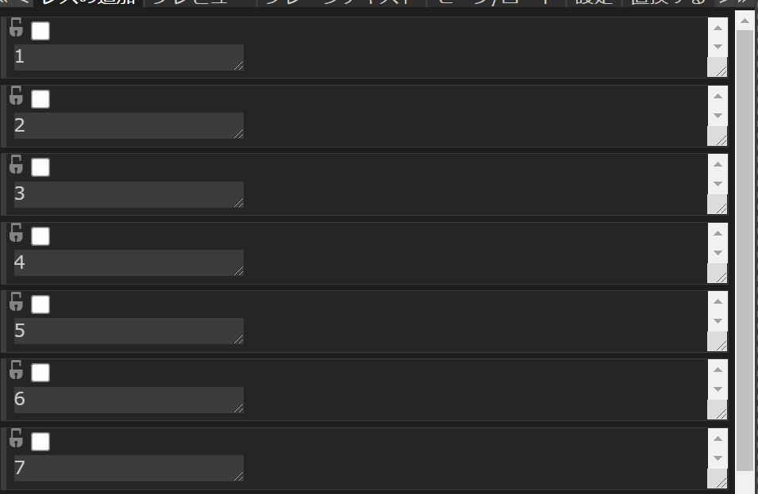
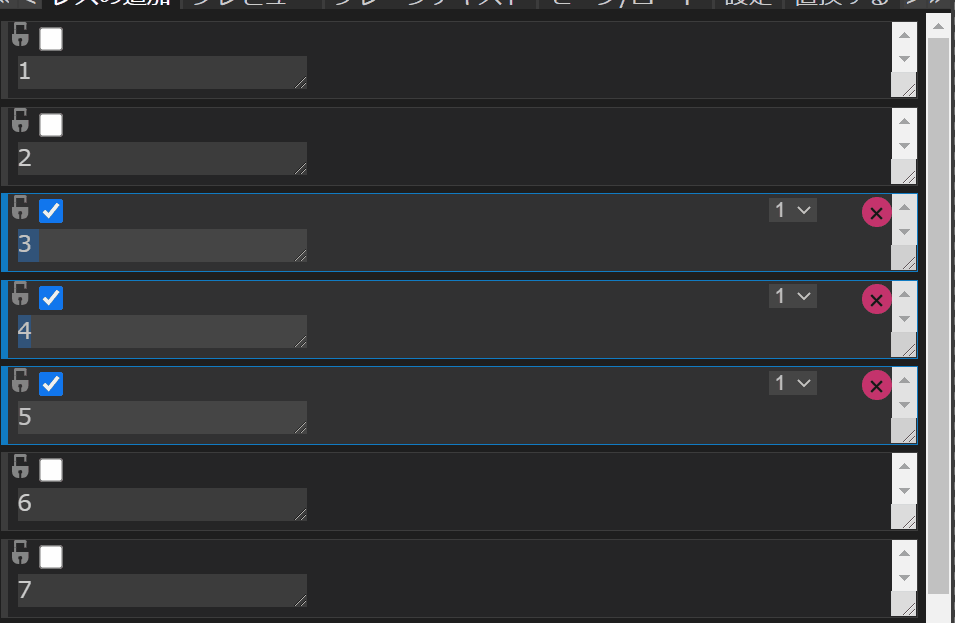

2. 投稿を操作する
メインパネルの「レスの追加」モードでは、投稿を追加するだけでなく、追加した投稿に対して様々な操作を加えることが可能です。
この章では、基本的な投稿の操作について記します。
2.1 選択する
追加された投稿をクリックしたり、投稿左上のチェックボックスを操作することで、投稿の選択が可能です。
選択状態の投稿に行われた操作は、他の選択状態の投稿にも反映されます。
ShiftキーやCtrlキーなどを押しながら行うことで、多様な方式で選択を行えます。
左クリック
- 他に選択状態の投稿がある場合：
- 他の投稿の選択を解除し、自分を選択する。
- そうでなければ：
- 自分の選択状態を反転する。

Ctrl+左クリック
- 自分の選択状態を反転する。

Shift+左クリック
- 自分が未選択の場合：
- 自分より上に選択状態の投稿がある場合：
- 自分より上にある選択状態の投稿のうち、最も自分と近い物から、自分までの投稿を、すべて選択状態にする。
- また、自分より下に選択状態の投稿がある場合：
- 自分から、自分より下にある選択状態の投稿のうち、最も自分と近い物までの投稿を、すべて選択状態にする。
Ctrl+Shift+左クリック
- 自分を選択する。

2.2 削除する
投稿の右上に存在する「×」ボタンをクリックすることで、対象の投稿を削除することができます。

動画のように、削除による番号のズレが発生することを防ぎたい場合は、後の章に登場する「変数の詳細設定」パネルの「固定する」機能を利用してください。
2.3 使用するテンプレートを変更する
右上のプルダウンメニューから、投稿レベルで使用するテンプレートを変更できます。
プルダウンメニューの選択肢はテンプレートの番号であり、「テンプレートの変更」パネルで編集したテンプレートの数だけ表示されます。
2.4 固定する
南京錠マークのチェックボックスをクリックすることで、投稿を固定する事が可能です。
固定された投稿は削除や並び替えの影響を受けません。
2.5 並び替える
選択状態の投稿をドラッグ&ドロップすると、並び替えを行えます。

並び替えは投稿における使用テンプレート、テキストボックスへの入力内容、リサイズ状態などの情報を移動させます。
並び替えは単純に選択状態の投稿すべてに行われるため、例え選択状態の投稿の間に未選択状態の投稿が挟まっていても、並び替えの対象にはなりません。
2.6 検索/置換
「レスの追加」モードでCtrl+Fキーを押すことで、メインパネルの右上に検索ボックスが表示されます。